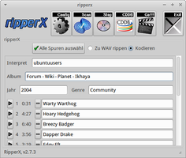
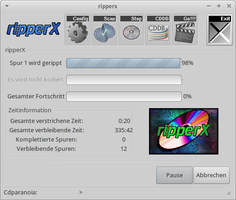
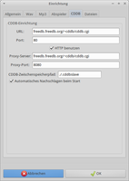

ripperX
Dieser Artikel wurde für die folgenden Ubuntu-Versionen getestet:
Ubuntu 16.04 Xenial Xerus
Ubuntu 14.04 Trusty Tahr
Zum Verständnis dieses Artikels sind folgende Seiten hilfreich:
ripperX ist ein schlankes, einfach zu bedienendes und übersichtliches Programm, um CDs zu rippen. Das Programm nutzt dabei cdparanoia und extrahiert die Daten. Auf Wunsch können diese in Vorbis, MP3 oder FLAC encodiert werden. Dies kann ebenfalls mit bestehenden WAV-Dateien erfolgen. Eine Titelliste wird von der freien Internetdatenbank Freedb abgerufen. Das Programm schreibt automatisch auch gleich die passenden ID3V2-Tags.
|  |
| ripperX |
Installation¶
Folgendes Paket muss installiert [1] werden:
ripperx (universe)
 mit apturl
mit apturl
Paketliste zum Kopieren:
sudo apt-get install ripperx
sudo aptitude install ripperx
Je nach gewünschtem Codec zusätzlich:
flac - um FLAC-Dateien zu erstellen
lame (multiverse) - wenn man MP3-Dateien mit LAME erstellen möchte
toolame (universe) - alternativer Encoder für MP3
Optional können
installiert werden.
Bedienung¶
Nach erfolgreicher Installation findet man das Programm bei Ubuntu-Varianten mit einem Anwendungsmenü unter "Unterhaltungsmedien -> Ripper X" oder unter "Multimedia -> Ripper X". ripperX ist sehr übersichtlich und einfach zu bedienen.
Menüleiste¶
| ripperX | |
| Button | Beschreibung |
| Programmeinstellungen aufrufen. | |
| Einlesen der CD. | |
| Wiedergabe unterbrechen. | |
| Abfrage der Internetdatenbank. | |
| Auslesen der CD starten. | |
| Programm beenden. | |
|  |
| Auslesevorgang |
Auslesen¶
Um eine Audio-CD auszulesen, muss man das Medium ins Laufwerk einlegen und mit einlesen. Sofern gewünscht, kann man mit die Daten aus der Internetdatenbank importieren - alternativ von Hand eingeben. Bei den gewünschten Titeln ist das Häkchen zu setzen oder " Alle Spuren auswählen" anzuwählen, um die komplette CD einlesen zu lassen. Anschließend das Häkchen setzen bei "Zu WAV rippen" oder "Kodieren" - je nach Wunsch. Den Vorgang startet man mit .
Konfiguration¶
Über die Konfigurationsmenüs von ripperX können diverse Einstellungen vorgenommen werden. Diese werden vom Programm im Homeverzeichnis in der Datei .ripperXrc hinterlegt. Beim ersten Programmstart kann man wählen, ob das Programm diese anlegen darf.
| Einstellungen | |
| Reiter | Beschreibung |
| "Allgemein" | Zielverzeichnisse für WAV-Dateien und die encodierten Dateien festlegen. |
| "Wav" | Einstellungsmöglichkeiten rund um die Erweiterung cdparanoia. |
| "Mp3" | Auswahl des Kodierers, der Bitrate, Priorität des Programms, sowie zu GStreamer. |
| "Abspieler" | Externe Multimediaplayer einstellen, um Audio-CDs und Dateien anzuhören. |
| "CDDB" | Internetdatenbank konfigurieren. |
| "Dateien" | Erscheinungsbild der eingelesenen bzw. encodierten Dateien festlegen. |
|  |
| Einstellungen |
CDDB¶
Über eine Internetdatenbank kann ripperX manuell oder auch automatisch die Titelliste der eingelegten CD abrufen. Das Beschriften per Hand kann somit entfallen. Es können auch andere Server eingetragen werden:
freedb.freedb.org/~cddb/cddb.cgifreedb2.org/~cddb/cddb.cgignudb.gnudb.org/~cddb/cddb.cgifreedb.musicbrainz.org/~cddb/cddb.cgi
Tipps¶
Einstellungstipps zu ripperX - sortiert nach den Reitern:
| Tipps | |
| Option | Beschreibung |
| General | |
| "Ask user when specified file exists" | Ist der Haken gesetzt, schützt diese Funktion vor dem Überschreiben bestehender Dateien. |
| "Keep Wav files" | WAV-Dateien werden normalerweise nach dem Kodieren automatisch gelöscht, diese Option verhindert dies. |
| WAV | |
| "Force search for drive" | Sorgt bei mehreren Laufwerken im Rechner dafür, dass die einzulesende CD besser gefunden wird. |
| "Disable paranoia" | Paranoia deaktivieren - Einlesevorgang wird schneller / Fehlerhäufigkeit der Dateien jedoch erhöht. |
| "Disable extra paranoia" | Deaktiviert gründliches paranoia: Einlesevorgang schneller / Fehlerhäufigkeit erhöht. |
| "Disable scratch detection" | Erkennung von Kratzern wird deaktiviert. |
| "Disable scratch repair" | Reparaturversuch von Kratzern bzw. dadurch verursachten Lesefehlern wird deaktiviert. |
| "Extra Options" | Wenn ripperX das CD-Laufwerk nicht findet, kann hier der Pfad zum CD-Laufwerk angegeben werden z.B.: -d /dev/cdrom1. Auch die Angabe von zwei Laufwerken ist möglich. |
| MP3 | |
| "High quality mode" | hohe Qualität |
| "Include CRC error protection" | Schutz vor CRC-Errors. |
| "CDDB" | |
| "Automatic lookup on startup" | Bei Aktivierung wird beim Starten von ripperX bzw. beim Einlegen einer neuen CD, automatisch die Titeldatenbank über eine bestehende Internetverbindung kontaktiert. Sofern die Daten in der Datenbank verfügbar sind, werden sie automatisch heruntergeladen. |
| Files | |
| "Convert spaces to underscores" | Jedes Leerzeichen im Dateinamen wird in einen Unterstrich konvertiert --> Bsp.: ubuntu users.mp3 wird zu ubuntu_users.mp3 |
| "Create Album Subdirectory for each CD" | Für jedes neue Album wird ein eigenes Unterverzeichnis angelegt. |
| "Create ID3-Tag" | Jede MP3-Datei bekommt einen sog. ID3-Tag, d.h. die Interpret-, Titel- und Albuminformationen werden in die MP3-Datei eingearbeitet und können vom jeweiligen Player dann ausgelesen werden. |
| "Create m3u playlist" | Erstellt eine Wiedergabeliste, beispielsweise in der Reihenfolge des Albums. |
| "Filename format string:" | Gibt die Möglichkeit, die automatische Beschriftung der späteren Dateien nach den eigenen Wünschen anzupassen. Die benötigten Variablen sind im Menü angegeben. Möchte man beispielsweise, dass die spätere MP3-Datei mit Artist und Titel beschriftet ist, so wäre die Eingabe: "%a - %s". Eine MP3-Datei vom "Artist: ubuntuusers" mit dem "Titel: ubuntu ist klasse" würde dann ubuntuusers - ubuntu ist klasse.mp3 benannt. So lässt sich also aus den angegebenen Variablen und beliebigen Zusatzzeichen eine für die persönlichen Bedürfnisse passendes Benennung erstellen. |
| "Directory format string:" | Hiermit lässt sich die Beschriftung des (Album-) Verzeichnisses anpassen. Die Einstellung erfolgt nach dem selben Prinzip, wie des Dateinamens. Um eine Struktur Verzeichnis/Unterverzeichnis zu erstellen, wird ein "/" eingesetzt (z.B: "%a/%v" für den Verzeichnisbaum Artist/Album). |
Links¶
CD-Datenbanken (CDDB):
tracktype.org
 - ehemals freedb2.org
- ehemals freedb2.org
ripperX
 - Blogbeitrag, 10/2009
- Blogbeitrag, 10/2009CDs rippen
 Programmübersicht
Programmübersicht
- Erstellt mit Inyoka
-
 2004 – 2017 ubuntuusers.de • Einige Rechte vorbehalten
2004 – 2017 ubuntuusers.de • Einige Rechte vorbehalten
Lizenz • Kontakt • Datenschutz • Impressum • Serverstatus -
Serverhousing gespendet von